データサイエンス実践 Ch5 線形回帰分析
資料
線形回帰分析
相関分析では, ある変数間に関係があることを示すことができました. しかし, 相関分析で示せるのは, 変数 A によって変数 B が増加するか, 減少するかということのみです. 具体的に, どの程度変数 A が動くことで, 変数 B がどの程度変動するかを式によって説明する手法に回帰分析 (Regression Analysis)があります.
また, 回帰分析は求められた式がどの程度信頼できるのかを検定によって確かめることも可能です.
回帰分析では, データ
y = \beta_0 + \beta_1 x
のような式で変数 y と x の関係を説明し, この式を回帰式, 回帰方程式と呼びます. このとき,
説明される変数 y を 被説明変数, 目的変数などと呼びます.
説明する変数 x を説明変数, 独立変数などと呼びます.
回帰式における \beta_0のような変数に乗じられていない値を切片といいます.
切片は, x = 0 のときの y の値を意味しています.
変数に乗じられている\beta_1のような値を傾きといい, \beta_0,\beta_1 などを併せて回帰係数といいます.
傾きは, x が 1 変化した際の y の変化量を表しています.
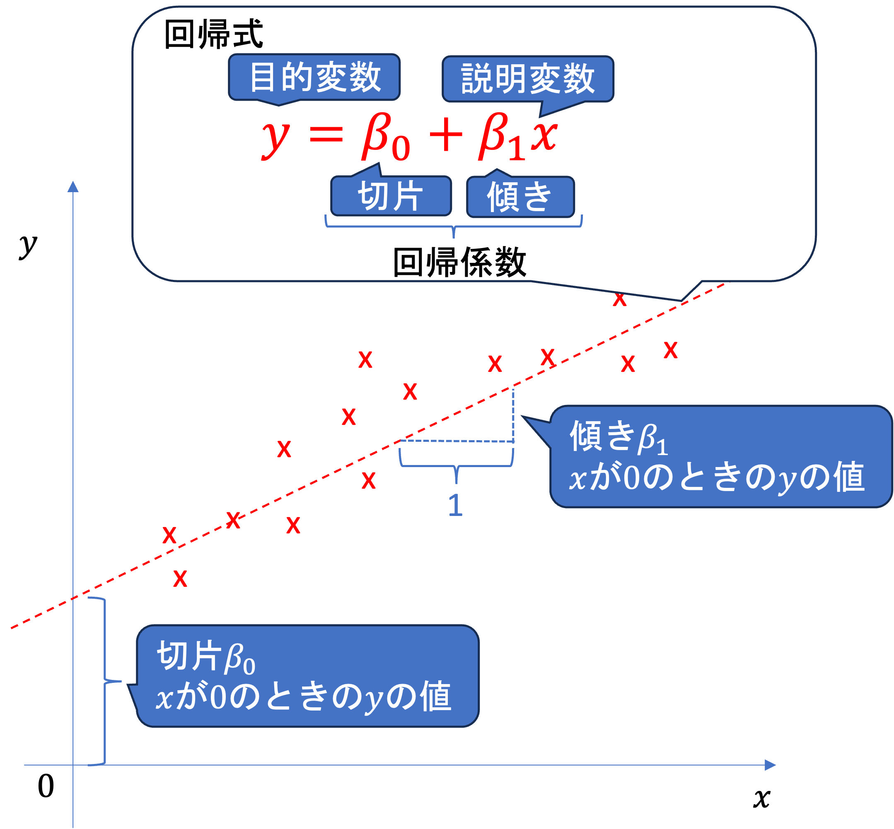
説明変数が一つの回帰式を求める分析を単回帰分析, 2 つ以上の説明変数を用いる場合を重回帰分析といいます.
y が x の線形関数である場合を 線形回帰 (Linear regression), それ以外のものを非線形回帰 (non-linear regression)といいます.
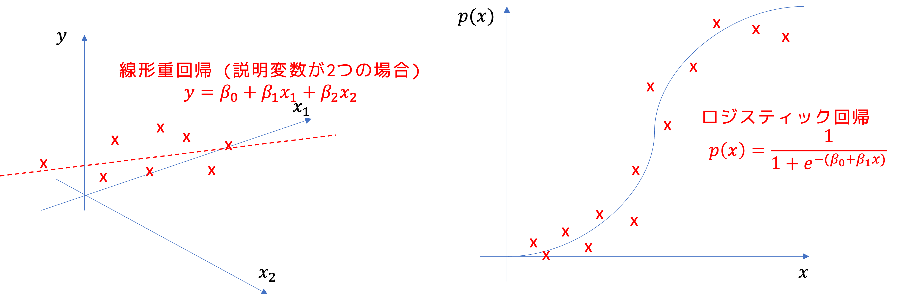
回帰分析は何を行っているのか (発展)
回帰分析が何を行っているのかについて, 単回帰で行っている最小二乗法を事例に確認していきましょう. 重回帰に関しては, 行列の計算 (線形代数) が必要になるので, 今回は扱いません. あくまで, 回帰というものがどのような意味であるかに関して簡単に説明します.
なお, 回帰分析の理論の詳細は統計学に関する別講義で扱っていますので, この講義ではあまり深く扱いません. 興味のある方は統計学の講義を受講してください.
母回帰方程式
体重 y を身長 x によって説明する回帰方程式として, y = \beta_0 + \beta_1 x を考えてみます. しかし, 実際の体重は身長以外の要素によってばらつきます. そのようなばらつきを考慮して, データの i 人目の体重, 身長をそれぞれ, Y_i,X_i として, 身長以外の要素によるばらつきを \epsilon_i とすると, 母集団において, 以下のような式が立てられます.
Y_i = \beta_0 + \beta_1 X_i + \epsilon_i ~(i=1,2,...,n)
これを母回帰方程式 (Population Regression Equation)と呼びます. また, \beta_0, \beta_1 を母 (偏) 回帰係数といい, これを推定, 検定することを回帰分析といいます.
誤差項, 撹乱項
母回帰方程式
Y_i = \beta_0 + \beta_1 X_i + \epsilon_i ~(i=1,2,...,n)
における \epsilon_i は X_i で説明できない誤差を表す確率変数であり, 誤差項, 撹乱項といいます.
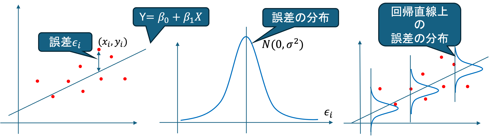
回帰分析において, 誤差項は以下の仮定をおいています.
- 期待値 0: E(\epsilon_i) = 0 ~ (i=1,2,...,n)
- 分散一定: V(\epsilon_i) = \sigma^2 ~ (i=1,2,...,n)
- 無相関: i \neq j \Rightarrow Cov(\epsilon_i, \epsilon_j) = 0
- 正規分布: \epsilon_i \sim N(0,\sigma^2)
これによって,
E(Y_i) = \beta_0 + \beta_1 X_i
が得られます.
最小二乗法
母回帰方程式
Y_i = \beta_0 + \beta_1 X_i + \epsilon_i ~(i=1,2,...,n) における母回帰係数 \beta_0, \beta_1 は観測できないので, 誤差項を最小化する母回帰係数を統計的推測することで求めます.
この誤差項を最小化する母回帰係数の推定方法を最小二乗法 (least squares method)といいます.
母回帰方程式を変形して,
\epsilon_i = Y_i - (\beta_0 + \beta_1 X_i)
が少ないほど, X_i による Y_i の説明力が上がります (モデルによってよく関係が説明できている).
なので, モデル全体で, \epsilon_i を最小化することを考えてみます.
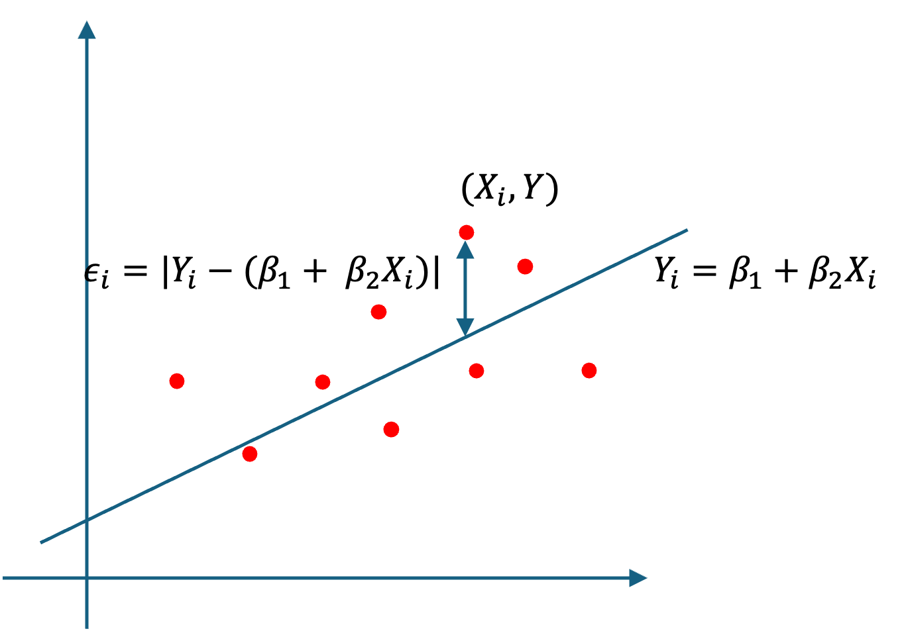
誤差の正負を打ち消すために, モデル全体の誤差項の二乗の和
\begin{align*} S & = \sum_{i=1}^{n} \epsilon_{i}^{2} \\ &= \sum_{i=1}^{n} \{Y_i - (\beta_0 + \beta_1 X_i)\}^2 \end{align*}
S を最小化する(最小二乗) 推定量 \hat{\beta_0},\hat{\beta_1} を求める問題として整理できます.
S の偏微分を 0 とおいて,
\frac{\partial S}{ \partial \beta_0} = -2 \sum (Y_i - \beta_0 - \beta_1 X_i) = 0 \\ \frac{\partial S}{ \partial \beta_1} = -2 \sum (Y_i - \beta_0 - \beta_1 X_i)X_i = 0 \\
これを解いて,
\hat{\beta_0} = \bar{Y} - \hat{\beta_1}\bar{X} \\ \hat{\beta_1} = \frac{\sum(X_i - \bar{X})(Y_i - \bar{Y})}{\sum(X_i - \bar{X})^2} が得られます.
回帰係数の検定
最小二乗推定量によって得られた方程式
Y = \hat{\beta_0} + \hat{\beta_1}X
を標本回帰方程式といいます.
求めた標本回帰方程式が, X と Y の関係を説明できているのかを考えます. X が Y を全く説明できていない場合, \epsilon_i だけで説明ができるため, \beta_1 \neq 0 と言えれば, 統計的に X が Y を説明できていると言えます.
そこで, 帰無仮説 H_0:\beta_1 = 0 として, 偏回帰係数に関する統計的仮説検定を実施します.
母数 \beta_1 に関する仮説検定を行うために, \beta_1 の確率分布を考えます.
誤差項 \epsilon_i \sim N(0,\sigma^2) として,
\hat{\beta_0} = \bar{Y} - \hat{\beta_1}\bar{X} \\ \hat{\beta_1} = \frac{\sum(X_i - \bar{X})(Y_i - \bar{Y})}{\sum(X_i - \bar{X})^2} であるから,
V(\hat{\beta_0}) = \frac{\sigma^2 \sum X_i^2}{n\sum(X_i - \bar{X})^2} \\ E(\hat{\beta_0}) = \beta_0 \\ V(\hat{\beta_1}) = \frac{\sigma^2 }{\sum(X_i - \bar{X})^2} \\ E(\hat{\beta_1}) = \beta_1 なので,
\hat{\beta_1} \sim N(\beta_1,\frac{\sigma^2}{\sum(X_i - \bar{X})^2})
となります.
この分布には未知の誤差項の母標準偏差 \sigma が含まれるので, \sigma を推定します.
標本回帰方程式 Y=\hat{\beta_0}+\hat{\beta_1}X によって求められる各 i の値 (回帰値)
\hat{Y_i} = \hat{\beta_0} + \hat{\beta_1}X_i
と実際に観測された実測値 Y_i との差を
\hat{e_i} = Y_i - \hat{Y_i} = Y_i - \hat{\beta_0} - \hat{\beta_1}X_i
を回帰残差 (residual) といい, X で説明されなかった部分を表します.
回帰残差を母回帰方程式 Y_i = \beta_0 + \beta_1 X_i + \epsilon_i における誤差項 \epsilon_i の推定値として利用します.
求める必要があるのは, 誤差項の分散の推定値としての分散
V(\hat{e_i}) = E(\hat{e_i^2}) - (E(\hat{e_i}))^2
であるが,
\frac{\partial S}{\partial \beta_0} = -2 \sum (Y_i - \beta_0 - \beta_1 X_i) = 0 なので,
\sum (Y_i - \beta_0 - \beta_1 X_i) = \sum \hat{e_i} = 0
となり,
\bar{e_i} = \frac{1}{n} \sum \hat{e_i} = 0
なので,
\begin{align*} V(\hat{e_i}) &= E(\hat{e}_i^2) \\ &= \frac{1}{n-2}\sum (\hat{e_i}^2 - \bar{e_i}^2) \\ &= \frac{\sum \hat{e_i}^2}{n-2} \end{align*}
となります.
これを誤差項の分散 \sigma^2 の推定値
S^2 = \frac{\sum \hat{e_i}^2}{n-2} として利用します.
なお, この平方根は回帰式がどの程度実測値に当てはまっているかを表す, 推定値の標準誤差 (standard error of estimates)と呼ばれます.
s.e. = \sqrt{S^2} = \sqrt{\frac{\sum \hat{e_i}^2}{n-2}}
これを誤差項の母標準偏差 \sigma の推定値として利用して, \hat{\beta_1} の標準誤差の推定値は,
V(\hat{\beta_1}) = \frac{\sigma^2 }{\sum(X_i - \bar{X})^2}
から,
s.e.(\hat{\beta_1}) = \frac{s.e.}{\sqrt{\sum(X_i - \bar{X})^2}}
となり, s.e.(\hat{\beta_1}) を用いて標準化した値は, t(n-2) に従うので,
t = \frac{\hat{\beta_1} - \beta_1}{s.e.(\hat{\beta_1})} \sim t(n-2)
あとは得られた推定量を用いて, 帰無仮説に関する t 検定を実施します.
単回帰分析
それでは, 実際に単回帰分析を実施してみます. 事例として, 以下の分析にどのような問題点があるのかを考えてみましょう.
今回に限らず毎度毎度のことだけど、日本「経済」新聞を名乗りながら、お粗末な統計リテラシーだからな。。。
— 糸石 浩司 (@itoishi) October 4, 2021
日経に限らず、本邦の大手紙は例外なく全てお粗末な統計リテラシー。
統計の基礎を勉強したい人はツッコミを入れると良いよ。ツッコミを入れるところだらけで勉強になるから。@IsayaShimizu https://t.co/cxMAFDPRfM
相関があることを言いたいなら散布図を描くべきでは？ あと，この16カ国はどうやって選んだのか？ https://t.co/ncWWtQ8A8L
— Haruhiko Okumura (@h_okumura) October 4, 2021
これらの POST は何を懸念しているのでしょうか.
元 POST では, 日本経済新聞が OECD Family Database のデータから作成したグラフを用いて男性の育児・家事時間の少なさが日本の少子化の原因であると主張しています.
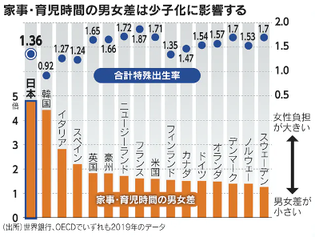
この分析の問題点は主に以下の 2 つです.
元の POST の通り, この記事ではグラフを主張の根拠としていますが, 棒グラフと散布図を組み合わせたような独自のグラフを作成しており, これを持って何が主張できるのかが明確ではありません. 2 つの量的データの関係性を示す場合は散布図が適当です.
また, グラフが適当であったとしても, グラフはデータの概観の把握には役立ちますが, グラフのみから明確な主張ができるわけではない場合が多いです.
まずは, グラフに関して考えてみましょう. 実は, 内閣府もこのデータを利用して同様の主張をしています. 内閣府のグラフでは, 独自のグラフではなく, 散布図が作成されています.
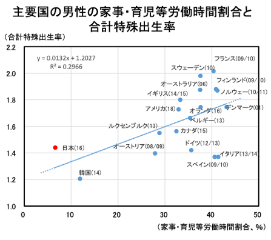
内閣府の資料では, 散布図に加えて回帰式 (y=0.0132x + 1.2027) と R^2 も求めています.
しかし, 先程説明した通り, 回帰分析とは回帰式に関する検定であり, 回帰式のみをもって, y (合計特殊出生率) に x (育児・家事労働時間割合) が影響を及ぼしているとは言えません.
では, 実際に回帰分析を実施してみるとどのような結果になるでしょうか?
データの準備
まずはデータを準備する必要があります. OECD Family Databaseから, SF2.1 Fertility rates 及び LMF2.5 Time used for work, care and daily household chores の Excel ファイルをダウンロードしました.
それぞれから fertility_rates.csv及び, time_used.csvを作成しました. 以下これらのデータをダウンロードして, 作業を進めてください.
可能であれば, 練習として以下のコードは見ないで, 元の内閣府の資料から何をする必要があるのか, 自分でどのように計算するかを考えて実行してみましょう.
まずはデータをそれぞれ読み込んでみましょう.
import pandas as pd
df_f = pd.read_csv('fertility_rates.csv')
df_t = pd.read_csv('time_used.csv')
print(df_f)
print(df_t)
"""
Country Fertility
0 Korea 0.92
1 Spain 1.23
2 Italy 1.27
3 Japan 1.36
4 Poland 1.42
5 Portugal 1.43
6 Lithuania 1.61
7 Luxembourg 1.34
8 Canada 1.47
9 Greece 1.34
10 Finland 1.35
11 Austria 1.46
12 Switzerland 1.48
13 United Kingdom 1.63
14 Costa Rica 1.63
15 Chile 1.55
16 Norway 1.53
17 Latvia 1.61
18 Germany 1.54
19 OECD average 1.60
20 Hungary 1.49
21 Belgium 1.60
22 Estonia 1.66
23 Netherlands 1.57
24 Slovak Republic 1.57
25 New Zealand 1.72
26 Slovenia 1.61
27 United States 1.71
28 Sweden 1.70
29 Australia 1.67
30 Türkiye 1.88
31 Colombia 1.77
32 Ireland 1.70
33 Denmark 1.70
34 France 1.83
35 Iceland 1.75
36 Mexico 1.92
37 Czech Republic 1.71
38 Israel 3.01
Country Paid Unpaid Care
0 Australia 20.3 10.5 2.2
1 Austria 22.5 9.4 1.5
2 Belgium 15.6 9.7 0.8
3 Canada 22.1 10.3 1.7
4 Estonia 21.0 11.5 1.8
5 Finland 15.4 11.2 1.0
6 France 14.5 9.7 1.0
7 Germany 17.4 9.8 1.4
8 Italy 14.5 8.2 1.2
9 Japan 26.3 4.7 0.5
10 Korea 26.5 3.0 0.8
11 Latvia 24.2 8.8 1.2
12 Mexico 30.0 4.4 3.5
13 New Zealand 19.9 11.3 1.1
14 Norway 18.6 11.7 1.6
15 Poland 21.7 6.2 1.5
16 Slovenia 18.9 11.4 1.6
17 Spain 14.8 8.9 2.0
18 Sweden 20.1 10.0 1.8
19 Turkey 20.2 2.6 3.5
20 United Kingdom 20.1 9.5 1.6
21 United States 20.4 10.2 1.6
"""確認してみると, 政府のデータは国ごとに異なる年代を使用しており, 年代も国の選択も OECD のデータベースで公開されているものとは異なるようです. 実際に, 日本経済新聞のデータとも値が異なっていることから, おそらく公開されていないデータを独自に集計しているようです. 今回は日本経済新聞で採用されている値から 2019 年の出生率及びデータベースで公開されている 1999-2013 年の家事・育児時間を採用します.
続いて, 政府のグラフに合わせて男性の労働時間, 家事及び育児の時間 (Paid, Unpaid, Care) に占める家事及び育児 (Unpaid, Care) の割合を計算します.
df_t['r'] = df_t[['Unpaid','Care']].sum(axis=1) / df_t[['Paid','Unpaid','Care']].sum(axis=1)
print(df_t)
"""
Country Paid Unpaid Care r
0 Australia 20.3 10.5 2.2 0.384848
1 Austria 22.5 9.4 1.5 0.326347
2 Belgium 15.6 9.7 0.8 0.402299
3 Canada 22.1 10.3 1.7 0.351906
4 Estonia 21.0 11.5 1.8 0.387755
5 Finland 15.4 11.2 1.0 0.442029
6 France 14.5 9.7 1.0 0.424603
7 Germany 17.4 9.8 1.4 0.391608
8 Italy 14.5 8.2 1.2 0.393305
9 Japan 26.3 4.7 0.5 0.165079
10 Korea 26.5 3.0 0.8 0.125413
11 Latvia 24.2 8.8 1.2 0.292398
12 Mexico 30.0 4.4 3.5 0.208443
13 New Zealand 19.9 11.3 1.1 0.383901
14 Norway 18.6 11.7 1.6 0.416928
15 Poland 21.7 6.2 1.5 0.261905
16 Slovenia 18.9 11.4 1.6 0.407524
17 Spain 14.8 8.9 2.0 0.424125
18 Sweden 20.1 10.0 1.8 0.369906
19 Turkey 20.2 2.6 3.5 0.231939
20 United Kingdom 20.1 9.5 1.6 0.355769
21 United States 20.4 10.2 1.6 0.366460
"""df_t と df_f は表示されている国が異なるので, df_t から情報を抽出します.
#照合のためにCountryをindexにします.
df_t.set_index('Country',inplace=True,drop=True)
df_f.set_index('Country',inplace=True,drop=True)
df_f['r'] = pd.NA
for i in df_f.index:
try:
df_f.at[i,'r'] = df_t.at[i,'r']
except:
pass
print(df_f)
"""
Fertility r
Country
Korea 0.92 0.125413
Spain 1.23 0.424125
Italy 1.27 0.393305
Japan 1.36 0.165079
Poland 1.42 0.261905
Portugal 1.43 <NA>
Lithuania 1.61 <NA>
Luxembourg 1.34 <NA>
Canada 1.47 0.351906
Greece 1.34 <NA>
Finland 1.35 0.442029
Austria 1.46 0.326347
Switzerland 1.48 <NA>
United Kingdom 1.63 0.355769
Costa Rica 1.63 <NA>
Chile 1.55 <NA>
Norway 1.53 0.416928
Latvia 1.61 0.292398
Germany 1.54 0.391608
OECD average 1.60 <NA>
Hungary 1.49 <NA>
Belgium 1.60 0.402299
Estonia 1.66 0.387755
Netherlands 1.57 <NA>
Slovak Republic 1.57 <NA>
New Zealand 1.72 0.383901
Slovenia 1.61 0.407524
United States 1.71 0.36646
Sweden 1.70 0.369906
Australia 1.67 0.384848
Türkiye 1.88 <NA>
Colombia 1.77 <NA>
Ireland 1.70 <NA>
Denmark 1.70 <NA>
France 1.83 0.424603
Iceland 1.75 <NA>
Mexico 1.92 0.208443
Czech Republic 1.71 <NA>
Israel 3.01 <NA>
"""df_t にデータの無い国を除外します.
#NAを削除
df_f.dropna(how='any',inplace=True)
print(df_f)
"""
Fertility r
Country
Korea 0.92 0.125413
Spain 1.23 0.424125
Italy 1.27 0.393305
Japan 1.36 0.165079
Poland 1.42 0.261905
Canada 1.47 0.351906
Finland 1.35 0.442029
Austria 1.46 0.326347
United Kingdom 1.63 0.355769
Norway 1.53 0.416928
Latvia 1.61 0.292398
Germany 1.54 0.391608
Belgium 1.60 0.402299
Estonia 1.66 0.387755
New Zealand 1.72 0.383901
Slovenia 1.61 0.407524
United States 1.71 0.36646
Sweden 1.70 0.369906
Australia 1.67 0.384848
France 1.83 0.424603
Mexico 1.92 0.208443
"""全てのデータが揃った国はこの 21 か国となりました.
このとき問題となるのが, どの国を採用するかです. 元の POST にも指摘がありましたが, 内閣府の計算ではなぜかメキシコが除外されていますので, それに従って実行してみます.
#メキシコを除外
df_f.drop('Mexico',axis=0,inplace=True)
print(df_f)
"""
Fertility r
Country
Korea 0.92 0.125413
Spain 1.23 0.424125
Italy 1.27 0.393305
Japan 1.36 0.165079
Poland 1.42 0.261905
Canada 1.47 0.351906
Finland 1.35 0.442029
Austria 1.46 0.326347
United Kingdom 1.63 0.355769
Norway 1.53 0.416928
Latvia 1.61 0.292398
Germany 1.54 0.391608
Belgium 1.60 0.402299
Estonia 1.66 0.387755
New Zealand 1.72 0.383901
Slovenia 1.61 0.407524
United States 1.71 0.36646
Sweden 1.70 0.369906
Australia 1.67 0.384848
France 1.83 0.424603
"""Fertility は % になっているので単位を揃えて r も % 表示にし, データ型も float にしておきます.
df_f['r'] = (df_f['r'] * 100).astype('float')
print(df_f)
"""
Fertility r
Country
Korea 0.92 12.541254
Spain 1.23 42.412451
Italy 1.27 39.330544
Japan 1.36 16.507937
Poland 1.42 26.190476
Canada 1.47 35.190616
Finland 1.35 44.202899
Austria 1.46 32.634731
United Kingdom 1.63 35.576923
Norway 1.53 41.692790
Latvia 1.61 29.239766
Germany 1.54 39.160839
Belgium 1.60 40.229885
Estonia 1.66 38.775510
New Zealand 1.72 38.390093
Slovenia 1.61 40.752351
United States 1.71 36.645963
Sweden 1.70 36.990596
Australia 1.67 38.484848
France 1.83 42.460317
"""散布図の作成
データが完成したので, 散布図を作成してみます. ラベルを表示するためにライブラリ adjustText を利用しています. この方法で作成する場合は uv add adjusttext してください.
import matplotlib.pyplot as plt
from adjustText import adjust_text
plt.figure(figsize=(10, 6))
plt.scatter(df_f['r'],df_f['Fertility'])
text = [plt.text(df_f.at[c,'r'],df_f.at[c,'Fertility'],c) for c in df_f.index]
adjust_text(text, arrowprops=dict(arrowstyle='-', color='gray', lw=0.5))
plt.xlim=(0,50)
plt.ylim=(0,2)
plt.ylabel('Fertility')
plt.xlabel('Unpaid and Care Work')
plt.title('Fertility vs Unpaid and Care Work with Country Labels')
plt.grid()
plt.show()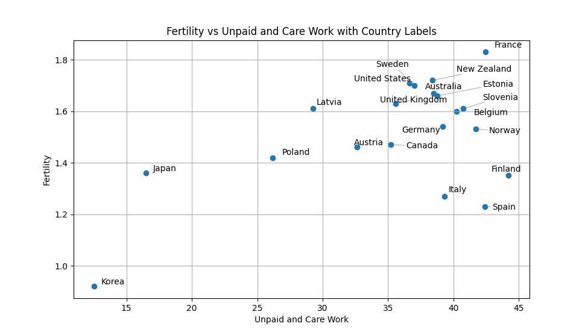
おおよそ政府と同じグラフが完成しました.
単回帰
つづいて, これらのデータを利用して単回帰分析を実施してみます. 回帰分析が可能なライブラリはいくつかありますが, ここでは statsmodels.api を利用してみます. uv add statsmodels をしておきましょう.
まずは, 切片 \beta_0 として定数 1 をデータに追加します. statsmodels では .add_constant() メソッドで追加できます.
import statsmodels.api as sm
# 説明変数(X)と目的変数(y)に分割
X = df_f[['r']]
y = df_f['Fertility']
# 切片(定数項)を追加
X = sm.add_constant(X)
print(X)
"""
const r
Country
Korea 1.0 12.541254
Spain 1.0 42.412451
Italy 1.0 39.330544
Japan 1.0 16.507937
Poland 1.0 26.190476
Canada 1.0 35.190616
Finland 1.0 44.202899
Austria 1.0 32.634731
United Kingdom 1.0 35.576923
Norway 1.0 41.692790
Latvia 1.0 29.239766
Germany 1.0 39.160839
Belgium 1.0 40.229885
Estonia 1.0 38.775510
New Zealand 1.0 38.390093
Slovenia 1.0 40.752351
United States 1.0 36.645963
Sweden 1.0 36.990596
Australia 1.0 38.484848
France 1.0 42.460317
"""回帰分析を実施するには OLS(y, X).fit() を利用します. OLS は Ordinary Least Squares の頭文字で最小二乗法を意味しています.
回帰分析の結果は .summary() メソッドで確認します.
# 回帰モデルを作成・フィット
result = sm.OLS(y, X).fit()
# 結果を表示
print(result.summary())
"""
OLS Regression Results
==============================================================================
Dep. Variable: Fertility R-squared: 0.282
Model: OLS Adj. R-squared: 0.243
Method: Least Squares F-statistic: 7.085
Date: Sat, 29 Mar 2025 Prob (F-statistic): 0.0159
Time: 13:27:03 Log-Likelihood: 6.4233
No. Observations: 20 AIC: -8.847
Df Residuals: 18 BIC: -6.855
Df Model: 1
Covariance Type: nonrobust
==============================================================================
coef std err t P>|t| [0.025 0.975]
------------------------------------------------------------------------------
const 1.0390 0.183 5.666 0.000 0.654 1.424
r 0.0134 0.005 2.662 0.016 0.003 0.024
==============================================================================
Omnibus: 3.229 Durbin-Watson: 0.868
Prob(Omnibus): 0.199 Jarque-Bera (JB): 2.595
Skew: -0.852 Prob(JB): 0.273
Kurtosis: 2.539 Cond. No. 161.
==============================================================================
"""様々な数値が出てきましたが, 単回帰において注目すべきは, (Adj.)R-squared, Prob (F-statistic), coef, P>|t|, [0.025 0.975] です.
それぞれ何を見ればよいのかを順に見ていきましょう.
回帰係数 (P 値, 区間推定値)
"""
coef std err t P>|t| [0.025 0.975]
------------------------------------------------------------------------------
const 1.0390 0.183 5.666 0.000 0.654 1.424
r 0.0134 0.005 2.662 0.016 0.003 0.024
"""回帰係数から今回推定された標本回帰方程式 (y=\hat{\beta}_0+\hat{\beta}_1x) は
y=1.0390+0.0134x
となります.
この \hat{\beta}_0 と \hat{\beta}_1 に対して H_0: \beta_i =0,H_1: \beta_i \neq 0 で検定した結果が, P>|t| として示されています.
また, \hat{\beta}_0 と \hat{\beta}_1 の下側信頼限界が 0.025, 上側信頼限界が 0.975 として示されています.
2 つの値は基本的に同じことを違う方法で表しています.
それぞれの説明変数の P 値 (P>|t|) は, その説明変数に対する回帰係数が 0 である (影響がない) という仮説に対する仮説検定の P 値を表しています. また, [0.025 0.975] はそれぞれ 95% 信頼区間の下限と上限を表しています.
有意水準 5% の場合, P値 < 0.05 で有意となり, 信頼区間が 0 をまたぎません.
(ここで両側検定ですが, P値 < 0.025 とならないのは, 両側の外側累積確率を合算した値が算出されるためです.)
したがって, これらの値はいずれも同じ判断の基準となりますが, 最近は論文などには両方載せることが主流です.
(仮説検定や区間推定, P 値の意味などに関しては, 統計学入門で詳細を扱っています. 分からない人はそちらを履修しましょう.)
「P 値 < 0.05」 かつ 「下側信頼限界と上側信頼限界が 0 をまたいでいない」場合には, それぞれの回帰係数が有意となります.
したがって今回の回帰分析の結果としては, いずれの回帰係数も有意であり, 出生率に影響を及ぼしていると考えることができます.
あまり良くない回帰分析の方法として, 有意な回帰係数のみを分析対象として, 有意でない回帰係数を無視して分析している場合がしばしばあります. 基本的には, 式を構成するすべての回帰係数が有意である場合にはじめてその式は利用できます.
方針等は指導教員によって異なるのでそれぞれに従っていただくとして, この講義では基本的に一つでも有意でない回帰係数がある場合には, その回帰式は利用できないとみなしてください.
式全体の評価指標 (R^2, F)
回帰係数の P 値, 区間推定値は回帰係数一つ一つに関する検定の結果でした. 個別の係数が問題ないとしても, 切片と傾きを合わせた式全体の評価はどうなのでしょうか. その判断に利用するのが, R^2 と 有意 Fです.
"""
R-squared: 0.282
Adj. R-squared: 0.243
F-statistic: 7.085
Prob (F-statistic): 0.0159
"""自由度調整済み決定係数 (Adj. R-squared)
決定係数 (R^2) は, モデルがどの程度当てはまっているかの基準です. 決定係数は説明変数の数が多いほど 1 に近づく特徴があるので, 説明変数が多い場合には説明変数の数を補正した 自由度調整済み決定係数 (\mathrm{Adj.}\ R^2) を用います.
基本的に 0 \leq \mathrm{Adj.}\ R^2 \leq 1 の値をとり, 目安として 0.5 \leq \mathrm{Adj.}\ R^2 であればある程度予測できていると考えられます.
どんな散布図になっても回帰式自体は作成可能ですが, 以下の左右どちらの予測値の方が信頼できそうでしょうか.
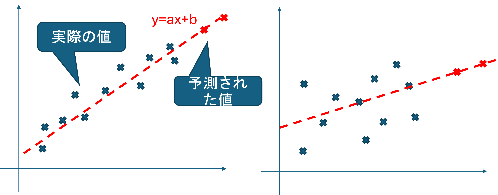
直感的には左の方が回帰直線が実際の値にフィットしており信頼できそうな気がしますね. R^2 はその感覚を数値化したものになります.
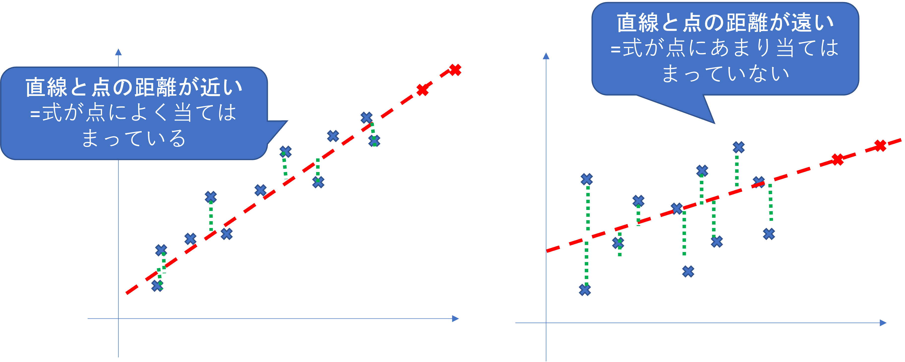
R^2 は, 式から作られた直線と, 実際のデータの点の距離の二乗和をもとに計算した値です. R^2 が 1 に近いほど, 式が点によく当てはまっていることを表します.
数値の解釈にも様々ありますが, この講義では
0.5 以上で予測に利用できる.
0.8 以上でかなり正確に予測ができる という解釈を採用します.
今回のモデルを見てみると, Adj. R-squared:0.243 であり, 予測精度が高くないことが分かります.
有意 F (Prob (F-statistic))
有意 F は求めた標本回帰式でどの程度データの散らばりを説明できるかを検定した結果です. どのような意味であるか見ていきましょう.
求めた回帰式と, データそれぞれの散らばりは, 全変動, 回帰変動, 残差変動によって表現可能です.
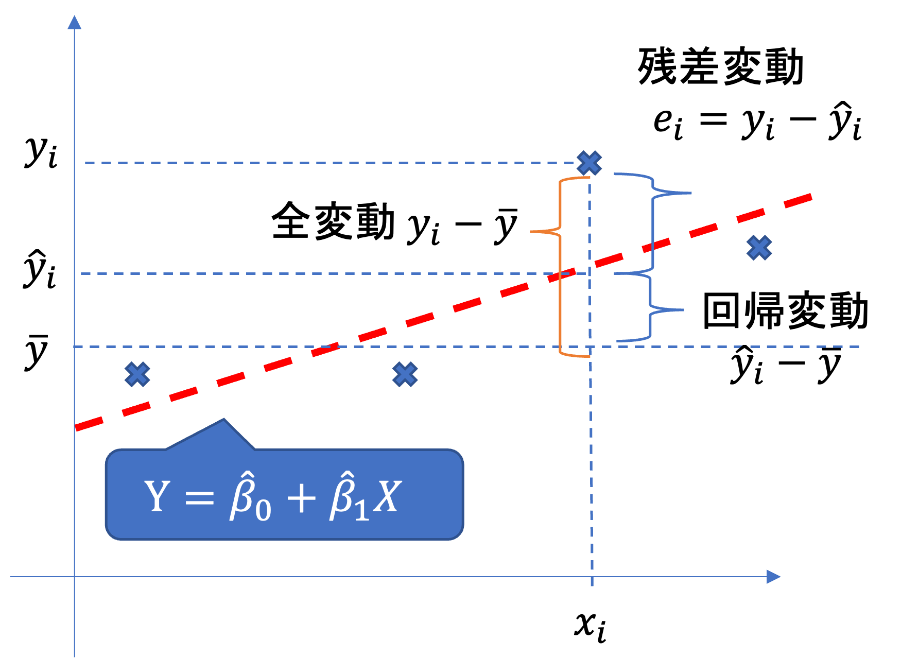
- 全変動: データと平均値の差の合計 (の二乗和)
データの散らばり具合
\sum_{i=1}^n (y_i-\bar{y})^2
- 回帰変動: 予測値とデータの平均値の差 (の二乗和)
データに対する回帰式の予測値の散らばり具合 \sum_{i=1}^n (\hat{y}_i-\bar{y})^2
- 残差変動: 予測値とデータの差 (の二乗和)
回帰式とデータのズレの散らばり具合
\sum_{i=1}^n (y_i-\hat{y}_i)^2
このとき
全変動 = 回帰変動+残差変動 すなわち,
\sum_{i=1}^n (y_i-\bar{y})^2 = \sum_{i=1}^n (\hat{y}_i-\bar{y})^2 + \sum_{i=1}^n (y_i-\hat{y}_i)^2
がなりたちます.
これは言い換えると,
データの散らばり=回帰式で説明できる散らばり+回帰式で説明できない散らばり
を表しています.
回帰変動の平均と, 残差変動の平均の比率を考えると, k を説明変数の数として,
\begin{align*} &\frac{回帰変動の平均}{残差変動の平均} &=\frac{\sum_{i=1}^n (\hat{y}_i-\bar{y})^2 /k}{\sum_{i=1}^n (y_i-\hat{y}_i)^2/(n-k-1)} \end{align*}
すなわち
\frac{回帰式で説明できる散らばり}{回帰式で説明できない散らばり}= 回帰式が説明できている割合
が成り立ちます.
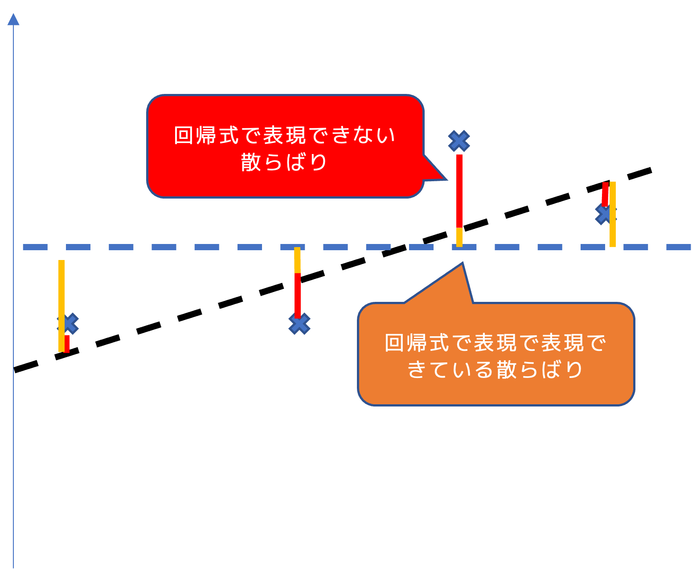
また, この説明の割合は F 分布に従うことが知られており,
F = \frac{\sum_{i=1}^n (\hat{y}_i-\bar{y})^2 /k}{\sum_{i=1}^n (y_i-\hat{y}_i)^2/(n-k-1)} \sim F(k,n-k-1)
H_0: \beta_1 = \beta_2 = \cdots = \beta_k = 0 (説明変数はどれも目的変数の散らばりを説明しない)
H_1: 少なくとも 1 つの \beta_j が 0 でない (回帰式が散らばりの一部を説明する)
H_0 が正しいとき, F は 1 の近くの値をとりやすく, 回帰式が説明できる散らばりが大きいほど F は大きくなります. この仮説で検定した結果の P 値が有意 F です.
したがって, 有意水準 5% のとき,
有意F < 0.05 であれば, 回帰式全体はデータを説明しているとみなすことができます.
今回は Prob (F-statistic):0.0159 であり, 有意に説明できていると言えます.
したがって今回の結果をまとめると,
y=1.03+0.01x
男性の仕事時間に対する家事育児の割合が 1% 増えると, 出生率が 0.01 増える
切片, 傾き, 式全体は有意 (回帰式でデータを説明できる)
予測精度は低い (予測には使えない)
という結果が得られます.
内閣府の分析では, 回帰式と R^2 のみが記載されており, 検定結果は載っていませんでしたが, 概ね正しい推論と言えます. ただし, Adj. R^2 が低いためこの結果をもって, 日本の男性の家事育児参加時間を X に増やせば出生率が Y になるというような予測はできません.
結果の可視化
最後に, このモデルを可視化してみましょう. まずは, 内閣府の資料と同じように散布図に回帰直線を可視化してみます.
OLS().fit() で得られた予測モデルは, .params[] で値を得ることができます. 回帰式を x の値と回帰係数から計算し, plt.plot() で直線を引いています.
import numpy as np
# 回帰直線のためのx軸データとy軸データ
x_vals = np.linspace(df_f['r'].min(), df_f['r'].max(), 100)
print(x_vals)
y_vals = result.params['const'] + result.params['r'] * x_vals
# 描画
plt.figure(figsize=(10, 6))
# 散布図
plt.scatter(df_f['r'], df_f['Fertility'], color='blue', label='Data Points')
# ラベル付け
texts = [plt.text(df_f.at[c, 'r'], df_f.at[c, 'Fertility'], c) for c in df_f.index]
adjust_text(texts, arrowprops=dict(arrowstyle='-', color='gray', lw=0.5))
# 回帰直線
plt.plot(x_vals, y_vals, color='red', linestyle='--', label='Regression Line')
# 軸・タイトル・その他
plt.xlim = (0, 50)
plt.ylim = (0, 2)
plt.xlabel('Unpaid and Care Work')
plt.ylabel('Fertility')
plt.title('Fertility vs Unpaid and Care Work with Regression Line')
plt.legend()
plt.grid()
plt.show()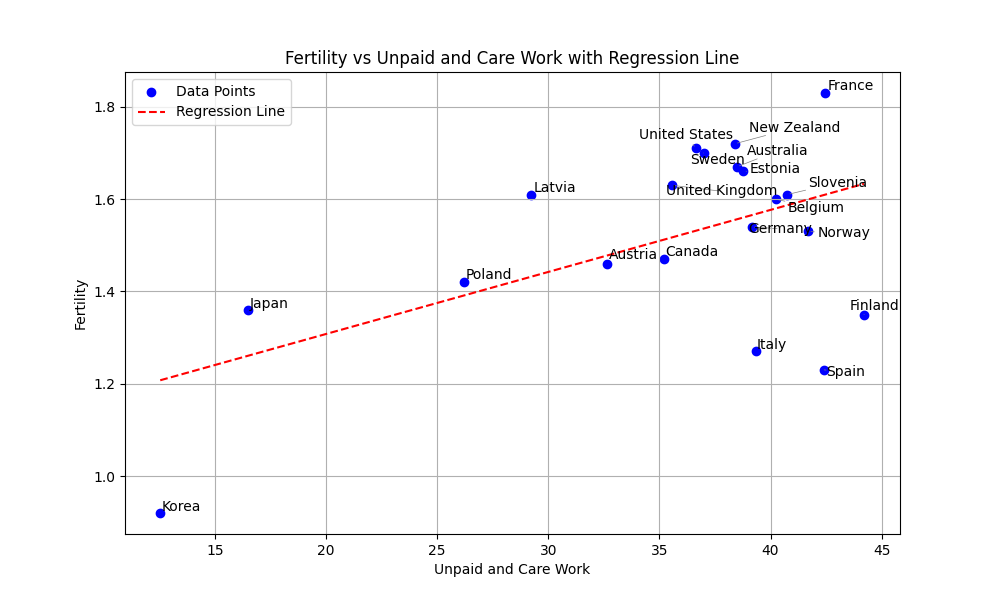
このようなグラフによって実測値に対する回帰直線の当てはまりを確認することもできますが, もう少しわかりやすい手法として, 縦軸に実測値 Y, 横軸に予測値 \hat{\beta}_0 + \sum \hat{\beta}_i X_i をプロットした散布図もよく用いられます.
先ほどとは異なり, .predict() メソッドで元データから計算された予測値を求めています. ここに x の等差級数を渡すことで先程のように回帰直線の値を得ることも可能です.
pred = result.predict(X)
plt.figure(figsize=(8, 6))
plt.scatter(pred, y, alpha=0.7, edgecolors="k")
plt.xlabel("Predicted")
plt.ylabel("Actual")
plt.title("Actual vs. Predicted")
plt.plot([y.min(), y.max()], [y.min(), y.max()], color="red", linestyle="--") # 完全一致のライン
plt.grid()
plt.show()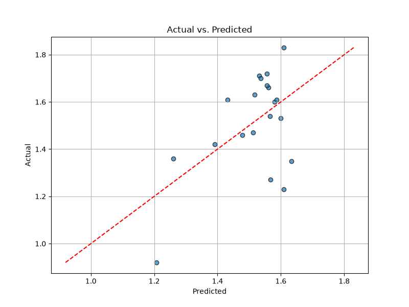
実測値と予測値が一致していれば, この散布図はグラフの 45 度線 (赤い点線) 上に一直線になります. R^2 の結果通り, あまり予測精度が高くないことがわかります.
実測値と予測値の カーネル密度プロット(KDE; Kernel Density Estimation Plot) を重ねたグラフもベイズモデルなどでよく利用される手法です.
実測値の分布と予測値の分布を見比べることで, 値全体でどの部分が過大/過少に推測されているかモデルの想定する分布がデータの分布と近いかが視覚化されます.
kde の描画には seaborn ライブラリが必要になるので uv add seaborn しておきましょう.
import seaborn as sns
plt.figure(figsize=(16,8))
sns.kdeplot(pred, label = 'Predicted')
sns.kdeplot(y, label = 'Actual')
plt.title('Actual/Predicted')
plt.xlabel('Fertility')
plt.ylabel('Density')
plt.legend()
plt.show()
plt.close()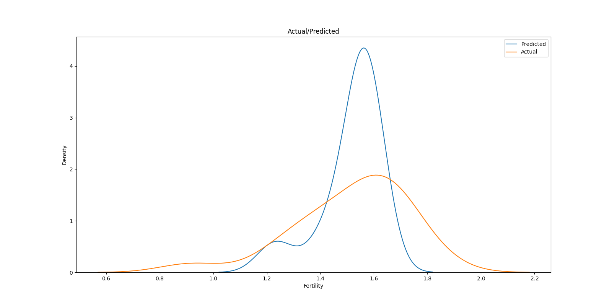
実測値と予測値で大きく分布が異なることがわかり, やはりあまり良いモデルとはいえなさそうです.
メキシコを加えた 21 か国での回帰分析は, 演習の Exercise DSP5-1で扱います.
重回帰分析
Y = \beta_0 + \beta_1 x_1 + \dots + \beta_n x_n
のように複数の説明変数, 回帰係数を利用して目的変数を説明する回帰分析を重回帰分析といいます. 基本的には, 単回帰と同じように分析することが可能ですが, いくつかの注意点があります.
注意点 1: モデル選択
前節で扱った単回帰分析では, そもそもデータに説明変数が一つしかなかったためにどの変数を利用するかという選択が必要ありませんでした. しかし, 多数の説明変数の存在を前提とする重回帰分析では, 全ての変数をモデルに採用するのではなく, 説明力の高い変数の組み合わせを選択する必要があります.
今回は線形重回帰分析のみを扱いますが, 様々なモデルを比較して最適なモデルを選択することをモデル選択といいます. モデル選択においては多重共線性などいくつかの判断基準に基づいて変数の選択を行います.
今回は明らかに利用できない変数をモデルから除外するという処理のみを行いますが, より多くの変数を扱う場合には, ステップワイズ法などの手法を用いて機械的に最適な組み合わせを選択する場合があります. 説明変数の組み合わせを予測の誤差で比べる方法は, 回帰の評価のあとの説明変数の組み合わせをテスト MSE で比べる (発展)で扱います.
注意点 2: データの正規化
重回帰分析では回帰係数毎に目的変数に対する説明変数の影響力が比較されます. その場合, 同一の基準で比較できるようにデータを正規化する必要があります.
これらの注意点に関して, 以下実例を通して概要を説明します. 手順が多く複雑ですが「回帰分析ができる」とはこの一連の手順を全て理解して, 実行できることを意味しています. 作業を再現しつつ, どのような処理を何故行っているのかを把握するようにしましょう.
データ準備
事例として架空の大学生の GPA に関するデータを利用します. multiple_regression.csvをダウンロードして利用してください.
各変数とデータの形式は以下のとおりです.
- 目的変数:
GPA(0-4) 量的変数 - 説明変数:
Scholarship(TRUE/FALSE) 質的変数;奨学生か否かStudy_Hours量的変数; 1 週間の平均勉強時間Sports_hours量的変数; 1 週間の平均運動時間Part_time_Work量的変数; 1 週間の平均バイト時間
| GPA | Scholarship | Study_Hours | Sports_hours | Part_time_Work |
|---|---|---|---|---|
| 3.191980667 | TRUE | 12.95386632 | 5.454919869 | 10.64263873 |
| 1.859812678 | FALSE | 10.68547312 | 7.614285509 | 13.35924324 |
| 1.980095331 | TRUE | 9.53740687 | 1.785033531 | 15.28753044 |
| 1.602786061 | TRUE | 8.795585218 | 5.369267717 | 16.45415926 |
| 0.559588183 | TRUE | 4.085912039 | 5.519765588 | 15.14785996 |
| 0.797498422 | FALSE | 7.120623166 | 6.563645744 | 15.05862363 |
| 1.578988552 | TRUE | 8.157444916 | 2.526098578 | 14.15564243 |
| 3.500751030 | TRUE | 14.2284889 | 2.359086774 | 10.15624819 |
| 2.201151409 | TRUE | 11.37447316 | 6.043883131 | 16.70622459 |
| 0 | FALSE | 2.947839379 | 5.593969346 | 19.04125979 |
| … | … | … | … | … |
このデータを利用して, GPA に影響する時間の使い方に関して分析します.
可視化 (散布図行列)
まずは散布図行列で組み合わせごとの特徴を把握します.
import numpy as np
import pandas as pd
import statsmodels.api as sm
import matplotlib.pyplot as plt
import matplotlib_fontja
import seaborn as sns
from sklearn.preprocessing import StandardScaler
df = pd.read_csv('multiple_regression.csv')
# 散布図行列の作成
pd.plotting.scatter_matrix(df[['GPA'
,'Study_Hours'
,'Sports_hours'
,'Part_time_Work']], range_padding=0.2)
plt.show()散布図行列において各交点には, 異なる変数の場合は散布図, 同じ変数の場合はヒストグラムが表示されています.
Scholarship は質的変数なので除外しています.
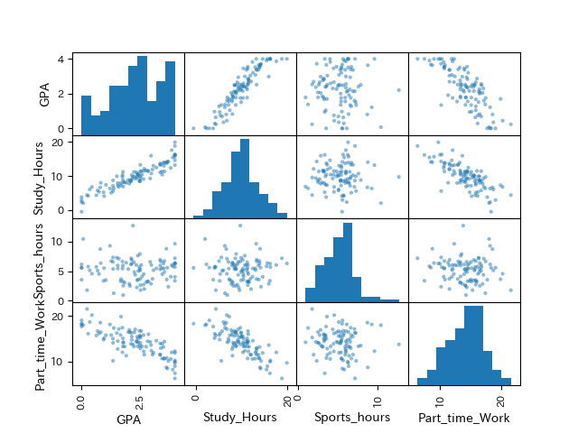
散布図行列を確認する場合は, 散布図とヒストグラムそれぞれを確認する必要があります. それぞれの見方は第3章で説明したとおりです.
散布図を見る際には, まず目的変数-説明変数の関係に注目します.
GPA に対して Study_Hours, Part_time_Work は相関がありそうに見えます.
続いて, 説明変数同士の関係にも注意が必要です. これは後に扱う多重共線性を考慮するためにも重要です.
説明変数同士も Study_Hours と, Part_time_Work には相関がありそうです.
次に, ヒストグラムを見ると Study_Hours, Sports_hours, Part_time_Work はいずれも単峰で左右対称な分布で, 外れ値もありません.
しかし, GPA は多峰な分布になっているので, 層別の必要性があります.
可視化 (ヒートマップ)
散布図では相関の有無は明確にならないので量的変数ごとに相関係数のヒートマップを作成し, より詳細に見てみます.
#ヒートマップで確認
sns.heatmap(df[['GPA'
,'Study_Hours'
,'Sports_hours'
,'Part_time_Work']].corr()
,vmax=1
,vmin=-1
,annot=True)
plt.show()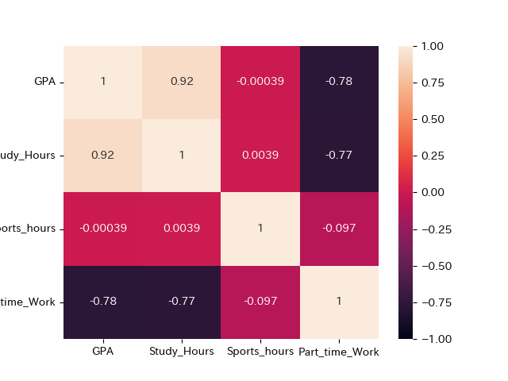
注目する点は, 基本的に散布図と同様です.
目的変数-説明変数
GPA-Study_Hoursにかなり強い正の相関GPA-Part_time_Workに強い負の相関
目的変数-説明変数に相関がある場合には, 回帰分析において有意になる可能性が高く, 説明変数として採用する可能性が高いです.
説明変数-説明変数
- Study_Hours-Part_time_Work にも強い負の相関
説明変数同士に相関が見られる場合は, 多重共線性を避けるために, 片方 (基本的には目的変数と相関係数が低い方) の変数を除外する必要があります.
多重共線性 (完全な多重共線性)
多重共線性とは, 説明変数間に強い相関関係があることで回帰係数の推定精度が落ちることを意味します. 多重共線性が見られる場合, 推定された回帰係数は標本によって大きく変わるので, 個々の係数の値を解釈できません. 係数を解釈して, 何が目的変数に影響するかを論じることが目的なら, 強い相関が見られる説明変数は, 目的変数に対する相関係数が高い方を残して, 片方を除外します. 予測が目的の場合は, 判断の基準が変わります (説明変数の組み合わせをテスト MSE で比べる).
説明変数 x_1,x_2,...,x_n において, 特定の変数 x_i が他の変数によって
x_i = \sum_{j \neq i} \alpha_j x_j
として, 少なくとも 1 つが 0 でない定数 \alpha_j によって表すことができる場合に, 「説明変数に完全な多重共線性が成り立っている」 といいます.
このとき, 最小二乗法では, Y = \beta_0 + \beta_1 x_1 + \dots + \beta_n x_n を解くことができなくなるため, 解が得られなくなります.
完全な多重共線性は基本的に, 特定の説明変数を変形して別の説明変数を追加した場合に生じるので, 特定の変数を変形した変数は入れるべきではありません.
例: x_1=\alpha_2 x_2 であるとすると, y=\beta_0+(\beta_1+\alpha_2 \beta_2)x_2 + \beta_3 x_3 + \dots \beta_n x_n
推定値が \hat{\beta}_{12} = \hat{\beta}_1 + \alpha_2 \hat{\beta}_2 であるとすると, \hat{\beta}_{12} となる \hat{\beta}_1 と \hat{\beta}_2 の組み合わせは無数にあるため, 具体的な値を特定できません.
多重共線性 (弱い多重共線性)
x_i \approx \sum_{j \neq i}\alpha_j x_j
で成り立つ (完全ではない/弱い) 多重共線性という概念もあります. これは, 説明変数間に完全相関以外の相関が成り立つ場合の多重共線性です.
変数間に相関がある場合
- サンプルサイズによって推定値が大きく変わる
- 標本によって推定値が大きく変わる
など, 推定値が不安定になります.
係数を解釈するときは, 多重共線性を避けるために, 変数間の相関が強い場合には片方を除外します. どちらの変数を残すかに関する基準には数理的なものもありますが,
検証したい仮説と関連の強いもの
目的変数に対する相関係数がより高い変数
を残すようにしましょう.
今回は, 回帰係数を解釈して GPA に影響する要因を調べることが目的なので, Study_Hours と相関の強い Part_time_Work を説明変数から除外します. 予測が目的なら, Part_time_Work を含めたモデルの方がテストデータでの誤差が小さくなります (説明変数の組み合わせをテスト MSE で比べる).
可視化 (層別とペアプロット)
散布図/ヒートマップを参考に多重共線性に関する示唆を得ることができました.
続いて, ヒストグラムについてもう少し深掘りしてみましょう. ヒストグラムが多峰になっていたので, 試しに唯一の質的変数である, Scholarship でデータを層別した散布図行列を作成してみます.
sns.pairplot(df[['GPA'
,'Study_Hours'
,'Sports_hours'
,'Part_time_Work'
,'Scholarship']]
, diag_kind="hist"
, hue="Scholarship"
, palette="Set2"
, diag_kws=dict(bins=8))
plt.suptitle("Scatterplot Matrix with Scholarship", y=1.02)
plt.show()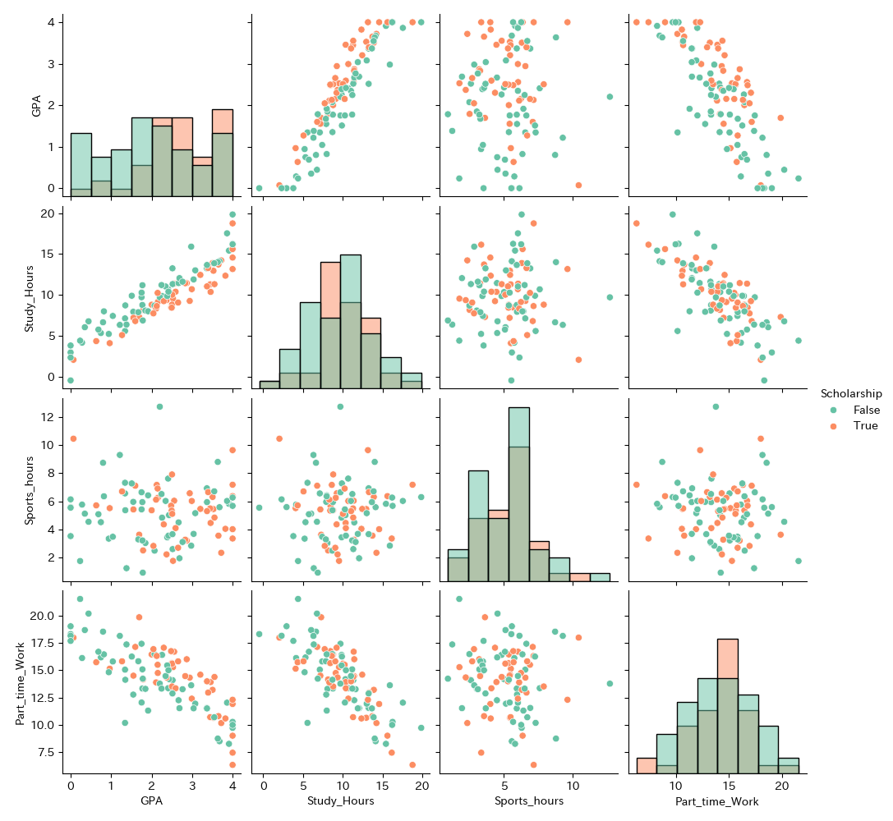
奨学金をもらっている (True) の分布と, もらっていない (False) 分布で GPA が異なることが分かります.
つまり, 奨学生とそれ以外の影響を分析に追加するべきであることが分かります.
それ以外の変数はそれほど違いがありません.
奨学金あり/なしいずれも単峰ではありませんが, 今回はこれ以上分割する情報がないので, この 2 つの層で分析を進めます.
可視化 (層別とジョイントプロット)
GPA に対して, Study_Hours の影響が最も強そうなので, この 2 変数に注目してもう少し詳細に見てみましょう.
この 2 変数のジョイントプロットを作成してみます.
#joinplotで男女別に密度プロットを表示
fig = sns.jointplot(data = df
,x ="Study_Hours"
,y ="GPA"
,hue='Scholarship'
,joint_kws = dict(alpha=0.5))
plt.show()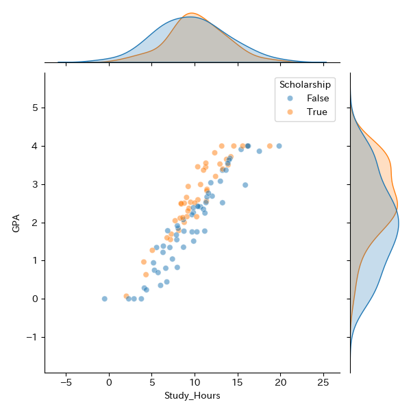
基本的には勉強時間が上がるほど, GPA が高くなるという傾向が見られます.
また, 奨学生の方が非奨学生よりも全体的に GPA が高いことが散布図, カーネル密度プロットの双方から分かります.
しかし, Scholarship は質的変数であり, そのままではこの影響を回帰分析に組み込むことができません. どのようにしたら良いのでしょうか?
ダミー変数化 (数量化 1 類)
説明変数に質的データを含める重回帰分析を数量化 1 類 (Quantification Method Type I)といいます.
基本的に回帰分析における質的データは 0/1 からなる擬似的な量的変数であるダミー変数に変換して処理しますがこのような数への変換を総じて数量化といいます.
数量化にはこの他にも, 目的変数と説明変数がともに質的データの場合の数量化 2 類 (Quantification Method Type Ⅱ), 説明変数に量的データが混ざっている場合の拡張型数量化 2 類などがあり, 数量化 3,4,5,6 類なども存在します.
数量化 2 類に関してはロジスティック回帰, 数量化 3 類に関しては主成分分析が同様の目的で利用されるため, これらに関しては本資料では扱いません.
例えば, 以下のような身長と体重, 性別, 国籍からなるデータがあった場合, 新たに性別, 国籍の種別の列を設けて当てはまる行に 1, 当てはまらない行に 0 を入力する変換を行います.
- 変換前のデータ
| id | 体重 | 身長 | 性別 | 国籍 |
|---|---|---|---|---|
| 1 | 65 | 170 | 男 | 日本 |
| 2 | 58 | 174 | 女 | 米国 |
| 3 | 78 | 189 | 男 | オランダ |
| … | … | … | … | … |
- ダミー変数に変換したデータ
| id | 体重 | 身長 | 性別 男 | 日本 | 米国 | オランダ |
|---|---|---|---|---|---|---|
| 1 | 65 | 170 | 1 | 1 | 0 | 0 |
| 2 | 58 | 174 | 0 | 0 | 1 | 0 |
| 3 | 78 | 189 | 1 | 0 | 0 | 1 |
| … | … | … | … | … | … | … |
それでは, Scholarship をダミー変数化してみましょう. pandas では get_dummies 関数で簡単に実装できます.
# カテゴリカルデータのダミー変数化
# get_dummies関数を使う(dtype='int'で0/1の数値に変換)
df = pd.get_dummies(df,columns=['Scholarship'],dtype='int')
print(df)
"""
Unnamed: 0 GPA Study_Hours Sports_hours Part_time_Work Scholarship_False Scholarship_True
0 0 3.191981 12.953866 5.454920 10.642639 0 1
1 1 1.859813 10.685473 7.614286 13.359243 1 0
2 2 1.980095 9.537407 1.785034 15.287530 0 1
3 3 1.602786 8.795585 5.369268 16.454159 0 1
4 4 0.559588 4.085912 5.519766 15.147860 0 1
.. ... ... ... ... ... ... ...
95 95 3.558740 16.199738 6.267838 9.986043 1 0
96 96 0.956727 6.866987 0.949715 14.228814 1 0
97 97 1.126911 8.711754 5.372909 14.130176 1 0
98 98 2.355837 13.254069 3.676427 12.873422 1 0
99 99 0.780918 5.076543 6.704867 15.826625 0 1
"""正規化・標準化
重回帰分析では, 単回帰分析と異なり複数の変数の影響を比較します. その際に例えば, 値 1 の単位が mm, 値 2 の単位が m, 値 3 の単位が % など異なると正確に比較できません. そこで, データの単位などを揃える操作として正規化か標準化を行う必要があります.
- 正規化
最大値を 1, 最小値を 0 にそろえること.
x{\prime}_i = \frac{x_i - \min(X)}{\max(X) - \min(X)}
- 標準化
標準得点を求めて, 平均 0 分散 1 に揃える.
z_i = \frac{x_i - \bar{x}}{\sigma}
正規化/標準化された値によって求められた回帰係数は目的変数に対するそれぞれの説明変数の影響力を表します. ただし, 単位が元のデータとは異なるので注意が必要です.
基本的には標準化が推奨されますが明確な使い分けはなく, 正規化のほうが直感的に影響力が理解されやすいため簡便な分析では利用される場合があります.
標準化は元のデータが正規分布であることを前提に実施されます. 分布が明らかに異なる場合は正規化が採用される場合もありますが, 重回帰分析自体がそのような仮定のもとで実施されているため, 今回の分析では暗黙に正規分布を仮定しています.
以下の分析では標準化を実施してみます. 標準化は, 自分で標準偏差などを求めて計算することも可能ですが sklearn.preprocessing の StandardScaler を利用すると簡単に実装できます.
#標準化
from sklearn.preprocessing import StandardScaler
scaler = StandardScaler()
df[['Scholarship_True'
,'Study_Hours'
,'Part_time_Work'
,'Sports_hours']] = scaler.fit_transform(df[['Scholarship_True'
,'Study_Hours'
,'Part_time_Work'
,'Sports_hours']])なお正規化も同様に MinMaxScaler を利用することができます.
#正規化
from sklearn.preprocessing import MinMaxScaler
# 正規化（0〜1に変換）
scaler = MinMaxScaler()
df[['Scholarship_True',
'Study_Hours',
'Part_time_Work',
'Sports_hours']] = scaler.fit_transform(df[['Scholarship_True'
,'Study_Hours'
,'Part_time_Work'
,'Sports_hours']])モデル選択
まずは, Part_time_Work を除外し, Scholarship のダミー変数 Scholarship_True を含める標準化された説明変数で重回帰分析を実施してみます.
# 説明変数(X)と目的変数(y)に分割
X = df[['Scholarship_True', 'Study_Hours','Sports_hours']]
y = df['GPA']
# 切片(定数項)を追加
X = sm.add_constant(X)
# 回帰モデルを作成・フィット
result = sm.OLS(y, X).fit()
# 結果を表示
print(result.summary())
"""
OLS Regression Results
==============================================================================
Dep. Variable: GPA R-squared: 0.944
Model: OLS Adj. R-squared: 0.943
Method: Least Squares F-statistic: 543.5
Date: Fri, 24 Oct 2025 Prob (F-statistic): 4.46e-60
Time: 12:48:46 Log-Likelihood: -7.4041
No. Observations: 100 AIC: 22.81
Df Residuals: 96 BIC: 33.23
Df Model: 3
Covariance Type: nonrobust
====================================================================================
coef std err t P>|t| [0.025 0.975]
------------------------------------------------------------------------------------
const 1.8366 0.027 69.060 0.000 1.784 1.889
Scholarship_True 0.2556 0.027 9.574 0.000 0.203 0.309
Study_Hours 1.0213 0.027 38.262 0.000 0.968 1.074
Sports_hours 0.0152 0.027 0.570 0.570 -0.038 0.068
==============================================================================
Omnibus: 22.718 Durbin-Watson: 2.026
Prob(Omnibus): 0.000 Jarque-Bera (JB): 62.615
Skew: 0.732 Prob(JB): 2.53e-14
Kurtosis: 6.590 Cond. No. 1.09
==============================================================================
"""注目すべきポイントは基本的に単回帰分析と同様です.
自由度調整済み決定係数 (0.943); 予測精度非常に高い
F 値 (4.46e-60); 説明力あり
回帰係数; 勉強時間が一番影響力が強い
ただし, 標準化されているため「Study_Hours が 1 時間伸びると GPA が 1.02 増える」といった解釈はできないことに注意してください.
P 値;
Sports_hours以外有意区間推定値;
Sports_hours以外有意
F 値や R^2 が良く概ね良い結果が出たように思えますが, この結果をもってなにか結論を導くことはできません.
- できない理由
Sports_hours の回帰係数が有意ではない
一部の社会科学では, 有意ではない変数を含めて, 有意である変数のみで結果を解釈するという方法論がしばしば用いられますが, モデル全体では有意ではない変数によってその他の変数の結果も影響を受けるため, この講義では有意ではない変数はモデルから除外することを推奨します.
その他, 変数ごとの P 値を比較して信頼度として解釈するようなことも行われがちですが, この講義ではそのような手法は行いません.
多重共線性と P 値を考慮して, Part_time_Work を説明変数から除外したモデルでの分析を実施してみます.
# Sports_hours を除外し説明変数(X)と目的変数(y)に分割
X = df[['Scholarship_True', 'Study_Hours']]
y = df['GPA']
# 切片(定数項)を追加
X = sm.add_constant(X)
# 回帰モデルを作成・フィット
result = sm.OLS(y, X).fit()
# 結果を表示
print(result.summary())
"""
OLS Regression Results
==============================================================================
Dep. Variable: GPA R-squared: 0.944
Model: OLS Adj. R-squared: 0.943
Method: Least Squares F-statistic: 820.8
Date: Fri, 24 Oct 2025 Prob (F-statistic): 1.62e-61
Time: 12:48:49 Log-Likelihood: -7.5729
No. Observations: 100 AIC: 21.15
Df Residuals: 97 BIC: 28.96
Df Model: 2
Covariance Type: nonrobust
====================================================================================
coef std err t P>|t| [0.025 0.975]
------------------------------------------------------------------------------------
const 1.8366 0.027 69.301 0.000 1.784 1.889
Scholarship_True 0.2557 0.027 9.613 0.000 0.203 0.308
Study_Hours 1.0213 0.027 38.398 0.000 0.969 1.074
==============================================================================
Omnibus: 23.472 Durbin-Watson: 2.005
Prob(Omnibus): 0.000 Jarque-Bera (JB): 63.596
Skew: 0.769 Prob(JB): 1.55e-14
Kurtosis: 6.591 Cond. No. 1.09
==============================================================================
"""自由度調整済み決定係数 (0.943); (変化無し) 予測精度非常に高い
F 値 (1.62e-61); (改善) 説明力あり
回帰係数; 勉強時間が一番影響力が強い
P 値; 全て有意
区間推定値; 全て有意
Sports_hours を除外したことで全ての変数が有意となり, F 値等も問題がないため選択した説明変数によって, 目的変数が説明するモデルが作成できたことになります.
今回は有意ではないものを除外することで, 信頼のおける回帰式を推論することができました.
この結果から,
奨学生の方が GPA が良いこと
勉強時間が多いほど GPA が高いこと
勉強時間の方が奨学生であることよりも GPA には効果があること
「奨学生であるか」「勉強時間」から GPA が予測できること
などが示されました.
なお, 今回の結果から
バイト時間が多いほど GPA が少ない
バイト時間や運動時間では GPA を説明できない
などの仮説がたてられますが, それが検証されたわけではないことに注意が必要です. (仮説検定は, 棄却されて初めて具体的な主張が可能です.)
AIC について
今回は, 有意ではない, かつ多重共線性のある説明変数を除外することで適当なモデルを選択することができました.
しかし, 全ての変数が有意なモデル同士はどのように比較するのでしょうか.
例えば, \mathrm{Adj.}\ R^2 や Prob (F-statistic) を比較してみると
Sports_hoursあり \mathrm{Adj.}\ R^2: 0.943,Prob (F-statistic): 4.46e-60Sports_hoursなし \mathrm{Adj.}\ R^2: 0.943,Prob (F-statistic): 1.62e-61
とそれほどの差はありません.
モデルの比較を行う際には基本的にこれらの値を利用するのではなく, AIC (赤池情報量基準, Akaike’s Information Criterion)や BIC (ベイズ情報量規準, Bayesian information criterion)を利用するのが一般的です.
いずれも「モデルの良さ」を表す基準であり, 値が小さいほど良いモデルとなります.
Sports_hours あり/なしを比較すると, AIC (22.81→21.15), BIC (33.23→28.96) 共に Sports_hours を除外したモデルのほうが値が小さいことが分かります.
結果の可視化
回帰分析の結果を画像でも確認してみます. 最も単純な回帰の結果を表すグラフは, 縦軸に実測値 Y, 横軸に予測値をプロットした散布図です.
pred = result.predict(X)
plt.figure(figsize=(8, 6))
plt.scatter(pred, y, alpha=0.7, edgecolors="k")
plt.xlabel("Predicted")
plt.ylabel("Actual")
plt.title("Actual vs. Predicted")
plt.plot([y.min(), y.max()], [y.min(), y.max()], color="red", linestyle="--") # 完全一致のライン
plt.grid()
plt.show()実測値と予測値が一致していれば, この散布図はグラフの 45 度線 (赤い点線) 上に一直線になります. ほとんどの点が 45 度線付近に集まっているので, かなり正確に予測ができていることが分かります.
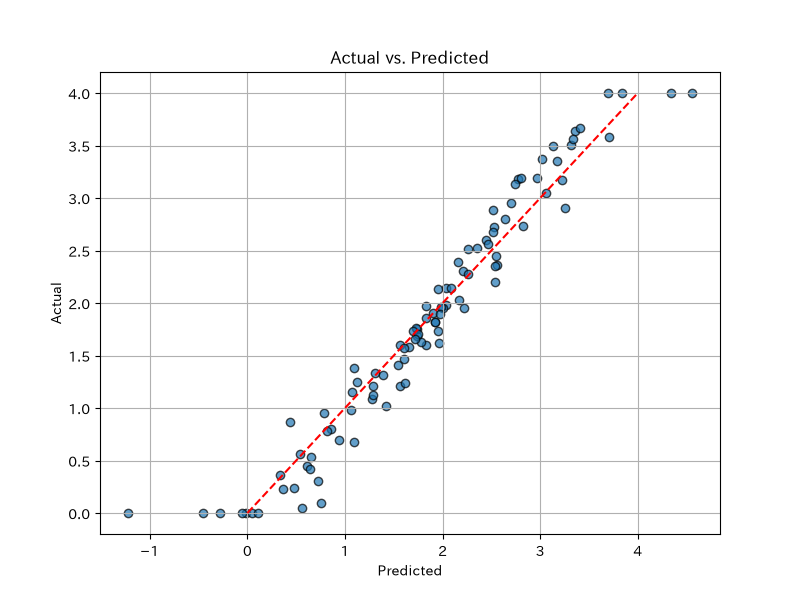
実測値と予測値のカーネル密度プロット (Kernel Density Estimation Plot)を重ねたグラフもベイズモデルなどでよく利用される手法です.
ここでは seaborn の kdeplot を利用してカーネル密度プロットを行ってみます.
#予測結果の作成
pred = result.predict(X)
plt.figure(figsize=(16,8))
sns.kdeplot(pred, label = 'Predicted')
sns.kdeplot(y, label = 'Actual')
plt.title('Actual/Predicted')
plt.xlabel('GPA')
plt.ylabel('Density')
plt.legend()
plt.show()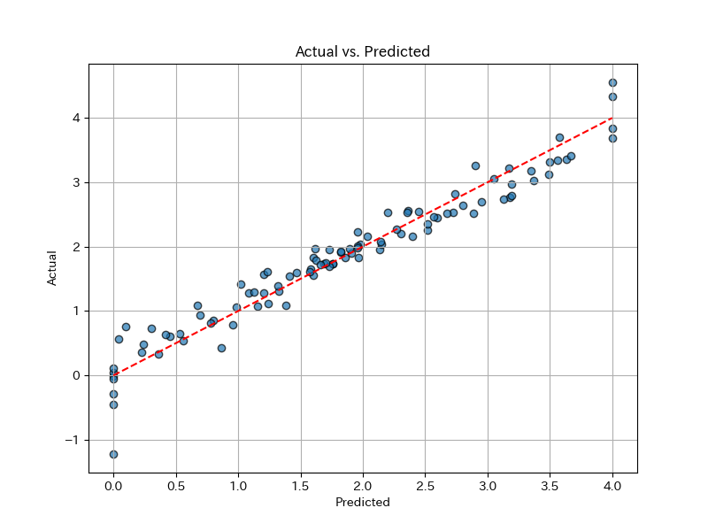
実測値の分布と予測値の分布を見比べることで, 値全体でどの部分が過大/過少に推測されているかモデルの想定する分布がデータの分布と近いかが視覚化されます.
基本的には実測値の分布を正しく予測できていることが分かります.
その他によく用いられるグラフにPartial Regression PlotやAdded-Variable Plotと呼ばれるグラフがあります.
縦軸に X_i 以外の変数で Y を回帰した際の残差 (他の変数の影響を取り除いた Y の変動)
横軸に X_i 以外の変数で X_i を回帰した際の残差 (他の変数の影響を取り除いた X_i の変動)
がプロットされています.
statsmodels では, そのための plot_partregress_grid というメソッドが準備されています.
from statsmodels.graphics.regressionplots import plot_partregress_grid
fig = plt.figure(figsize=(16,8))
plot_partregress_grid(result, fig=fig)
plt.show()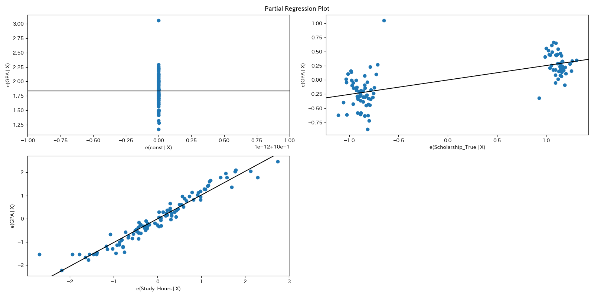
このグラフでは他の変数の影響を取り除いた上での Y と X_i の関係を可視化する手法であり, 回帰直線の傾きが大きいほど他の変数の影響を取り除いた上での X_i の Y への影響力が強いことが分かります.
回帰の評価
回帰係数の P 値や決定係数は, 回帰式を求めたデータに式がどれだけ当てはまるかを表します. 回帰式を予測に使うときに知りたいのは, 式を求めるのに使っていない新しいデータに対して, 予測値が実測値からどれだけ外れるかです. GPA のデータを 2 つに分け, 一方で求めた回帰式の予測の誤差をもう一方で測ります.
訓練データとテストデータ
回帰式は, 手元のデータの残差の二乗和が最も小さくなるように係数を決めています. そのため, 式を求めたのと同じデータで誤差を測ると, そのデータにたまたま含まれていたばらつきにまで式を合わせた分だけ, 誤差は小さく出ます. 説明変数を増やすと, 目的変数と関係のない変数であっても, 手元のデータでの誤差は小さくなるか変わらないかのどちらかです. 式全体の評価指標で, 決定係数が説明変数の数とともに 1 に近づくので自由度調整済み決定係数を使う, と述べたのも同じ理由です.
そこで, データを 2 つに分けます. 回帰式を求めるのに使う部分を訓練データ, 求めた式の予測の良さを測るために取っておく部分をテストデータといいます. テストデータでの誤差は, 結果がまだ分からない新しいデータに式を使ったときの誤差の見積もりになります. 訓練データでは誤差が小さいのに, テストデータでは誤差が大きい状態を過学習といいます. 第6章で分類のモデルを評価するときにも, 同じ分け方を使います.
残差と平均二乗誤差
データ i の実測値を y_i, 回帰式による予測値を \hat{y}_i とすると, その差 y_i - \hat{y}_i が残差です (回帰係数の検定の回帰残差と同じものです). 残差の二乗の平均を平均二乗誤差 (Mean Squared Error, MSE) といいます.
\mathrm{MSE} = \frac{1}{n}\sum_{i=1}^{n} (y_i - \hat{y}_i)^2
残差を二乗するのは, 正の残差と負の残差が打ち消し合わないようにするためで, 最小二乗法で残差の二乗和を使うのと同じ理由です. MSE は 0 以上の値をとり, 予測が実測値に近いほど小さくなり, すべての予測値が実測値と一致すれば 0 になります. 分子の残差の二乗和は, 有意 Fの説明に出てきた残差変動と同じ量です. MSE はそれをデータ数 n で割った平均で, 推定値の標準誤差を求めるときに n-2 で割ったのとは割る数が違います.
4 人の学生について, 実測の GPA と回帰式による予測値が次のようになったとします.
| 学生 | 実測値 y_i | 予測値 \hat{y}_i | 残差 y_i - \hat{y}_i | 残差の二乗 |
|---|---|---|---|---|
| 1 | 3.0 | 2.7 | 0.3 | 0.09 |
| 2 | 2.0 | 2.5 | -0.5 | 0.25 |
| 3 | 1.5 | 1.4 | 0.1 | 0.01 |
| 4 | 3.5 | 3.4 | 0.1 | 0.01 |
MSE は残差の二乗の平均なので,
\mathrm{MSE} = \frac{0.09 + 0.25 + 0.01 + 0.01}{4} = \frac{0.36}{4} = 0.09
です. 二乗するので, 大きく外れた予測ほど MSE への寄与が大きくなります. この例では, 学生 2 の 1 人分 (0.25) が残差の二乗和 0.36 の約 7 割を占めています.
MSE の単位は, 目的変数の単位の二乗 (この例では GPA の二乗) です. 平方根をとって目的変数と同じ単位に戻したものを平方根平均二乗誤差 (Root Mean Squared Error, RMSE) といいます.
\mathrm{RMSE} = \sqrt{\mathrm{MSE}} = \sqrt{0.09} = 0.3
RMSE が 0.3 なので, この回帰式の予測は GPA でおよそ 0.3 程度外れる, と読めます.
決定係数 R^2 も残差の二乗和から計算しますが, 目的変数の全変動で割る点が違います.
R^2 = 1 - \frac{\sum_{i=1}^{n} (y_i - \hat{y}_i)^2}{\sum_{i=1}^{n} (y_i - \bar{y})^2}
R^2 は単位を持たない比で, 目的変数のばらつきのうち回帰式で説明できた割合を表します. MSE と RMSE は誤差の大きさそのもので, 予測が平均してどれだけ外れるかを目的変数の単位で表します. 同じデータで同じ目的変数を予測するモデル同士なら, MSE が小さいほど R^2 は大きくなるので, どちらで比べても順位は変わりません. 一方, 目的変数の単位や散らばりが違うデータの間では MSE を比べられないので, R^2 を使います. どちらの指標も, テストデータで計算すれば新しいデータへの当てはまりを表します.
この節に対応する演習は, 章末のExercise DSP5-3です.
scikit-learn による MSE の計算
重回帰分析で選んだ, Scholarship_True と Study_Hours を説明変数とするモデルを評価します. statsmodels の代わりに, 予測によく使われる scikit-learn の LinearRegression を使います. 係数は同じ最小二乗法で求まり, .fit() で訓練データから係数を求め, .predict() で予測値を計算します. RMSE を GPA の単位で読めるように, CSV を読み直し, 標準化をせずに元の単位のまま使います.
import numpy as np
import pandas as pd
import matplotlib.pyplot as plt
import matplotlib_fontja
from sklearn.model_selection import train_test_split
from sklearn.linear_model import LinearRegression
from sklearn.metrics import mean_squared_error, r2_score
# 標準化はせず, 元の単位のまま使う
df = pd.read_csv('multiple_regression.csv')
df = pd.get_dummies(df, columns=['Scholarship'], dtype='int')
X = df[['Scholarship_True', 'Study_Hours']]
y = df['GPA']
# 7割を訓練データ, 3割をテストデータにする
X_train, X_test, y_train, y_test = train_test_split(
X, y, test_size=0.3, random_state=0)
print(len(X_train), len(X_test))
# 訓練データだけで回帰式を求める
model = LinearRegression()
model.fit(X_train, y_train)
print(f'切片: {model.intercept_:.3f}')
print(f'係数: {model.coef_.round(3)}')
# 訓練データとテストデータの予測値
pred_train = model.predict(X_train)
pred_test = model.predict(X_test)
mse_train = mean_squared_error(y_train, pred_train)
mse_test = mean_squared_error(y_test, pred_test)
print(f'MSE 訓練: {mse_train:.3f} テスト: {mse_test:.3f}')
print(f'RMSE 訓練: {np.sqrt(mse_train):.3f} テスト: {np.sqrt(mse_test):.3f}')
print(f'R2 訓練: {r2_score(y_train, pred_train):.3f} テスト: {r2_score(y_test, pred_test):.3f}')
"""
70 30
切片: -1.007
係数: [0.509 0.267]
MSE 訓練: 0.070 テスト: 0.067
RMSE 訓練: 0.265 テスト: 0.258
R2 訓練: 0.940 テスト: 0.950
"""train_test_split はデータをランダムに分ける関数で, test_size=0.3 で 100 人のうち 3 割の 30 人をテストデータにしています. random_state で乱数を固定しておくと, 何度実行しても同じ分け方になります. mean_squared_error は MSE を返すので, RMSE は np.sqrt で平方根をとって求めます.
元の単位のままなので, 係数はそのまま読めます. 勉強時間が 1 時間増えると GPA の予測値は約 0.27 上がり, 奨学生の予測値は非奨学生より約 0.51 高くなります.
テストデータの MSE は 0.067 (RMSE 0.258) で, この回帰式で新しい学生の GPA を予測すると, GPA でおよそ 0.26 程度外れると見積もれます. 訓練データの MSE (0.070) とほぼ同じで, 訓練データにだけ当てはまる過学習は起きていません. テストデータの方がわずかに小さいのは, どの 30 人がテストデータに入ったかによる偶然です. テストデータでの誤差が訓練データより大きくなるとは限らず, 評価で見るのは差の向きではなく, 新しいデータでの誤差の大きさと, 訓練データとの間に大きな開きがないかです. テストデータの R^2 も 0.950 で, 式全体の評価指標の基準 (0.8 以上でかなり正確) を満たしています.
予測値と実測値の散布図に, 訓練データとテストデータを分けて描きます. 上のコードの続きで実行します.
plt.figure(figsize=(6, 6))
plt.scatter(pred_train, y_train, alpha=0.5, label='訓練データ')
plt.scatter(pred_test, y_test, marker='^', color='tab:orange', edgecolors='k', label='テストデータ')
lims = [y.min() - 0.3, y.max() + 0.3]
plt.plot(lims, lims, color='red', linestyle='--', label='予測値 = 実測値') # 45度線
plt.xlabel('予測値 (GPA)')
plt.ylabel('実測値 (GPA)')
plt.title('予測値と実測値')
plt.legend()
plt.grid()
plt.show()
plt.close()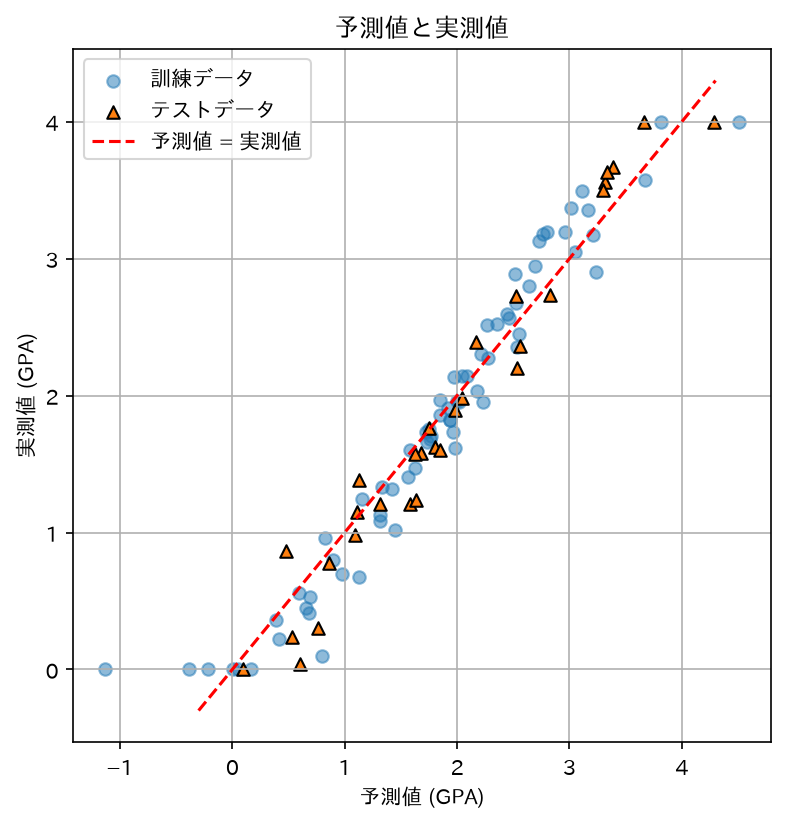
横軸が予測値, 縦軸が実測値で, 予測が実測値と一致した点は赤い点線 (45 度線) の上に乗ります. テストデータの点 (三角) も, 訓練データの点と同じように 45 度線のまわりに集まっていて, 散らばりの幅にも違いは見えません. 一方, 左下では, 実測値が 0 の学生に対する予測値が 0 を下回っています (最も外れた学生では -1.1). GPA は 0 から 4 の範囲に収まる値ですが, 線形回帰の予測値には上限も下限もないためです. MSE は大きく外れた予測を強く数えるので, この範囲の端の学生が誤差を押し上げています.
この節に対応する演習は, 章末のExercise DSP5-2です.
説明変数の組み合わせをテスト MSE で比べる (発展)
重回帰分析では, 多重共線性と P 値を手がかりに説明変数を選びました. 予測が目的なら, 候補の説明変数から作れる組み合わせごとに回帰式を求め, テストデータの MSE で比べる方法もあります. 候補が Scholarship_True, Study_Hours, Sports_hours, Part_time_Work の 4 つなら, 組み合わせは 15 通りです.
import itertools
import pandas as pd
from sklearn.model_selection import train_test_split
from sklearn.linear_model import LinearRegression
from sklearn.metrics import mean_squared_error
df = pd.read_csv('multiple_regression.csv')
df = pd.get_dummies(df, columns=['Scholarship'], dtype='int')
candidates = ['Scholarship_True', 'Study_Hours', 'Sports_hours', 'Part_time_Work']
train, test = train_test_split(df, test_size=0.3, random_state=0)
rows = []
for k in range(1, len(candidates) + 1):
for cols in itertools.combinations(candidates, k):
cols = list(cols)
model = LinearRegression().fit(train[cols], train['GPA'])
rows.append({'説明変数': ' + '.join(cols),
'訓練 MSE': mean_squared_error(train['GPA'], model.predict(train[cols])),
'テスト MSE': mean_squared_error(test['GPA'], model.predict(test[cols]))})
result = pd.DataFrame(rows).sort_values('テスト MSE')
print(result.head(5).round(3).to_string(index=False))
"""
説明変数 訓練 MSE テスト MSE
Scholarship_True + Study_Hours + Part_time_Work 0.046 0.034
Scholarship_True + Study_Hours + Sports_hours + Part_time_Work 0.046 0.034
Scholarship_True + Study_Hours 0.070 0.067
Scholarship_True + Study_Hours + Sports_hours 0.069 0.069
Study_Hours + Part_time_Work 0.108 0.117
"""itertools.combinations(candidates, k) は, 候補から k 個を選ぶ組み合わせを順に返します. データの分け方は本文と同じなので, 3 行目のモデルのテスト MSE (0.067) は 回帰の評価の値と一致します.
テスト MSE が最も小さいのは Part_time_Work を含むモデル (0.034) で, 本文で選んだモデルの約半分です. 多重共線性 (弱い多重共線性)の節では, Study_Hours との相関 (-0.77) を理由に Part_time_Work を除外しました. 2 つの結論が違うのは, 目的が違うためです. 多重共線性は個々の回帰係数の推定を不安定にするので, 係数を解釈して何が GPA に影響するかを論じるときに問題になります. 予測値そのものは, 相関の強い説明変数を含んでいても安定していることが多く, 予測が目的ならテスト MSE が判断の基準になります.
ただし, テスト MSE が最小の組み合わせを選ぶと, テストデータを変数の選択に使ったことになります. 選んだモデルのテスト MSE は, 多くの候補の中から最も良かったものなので, 新しいデータでの誤差より小さめに出ます. 変数の選択まで行うときは, 訓練データをさらに分けた検証データで組み合わせを選び, テストデータは選んだモデルの最後の評価に 1 回だけ使います.
実データでの事例
本章の事例はダミーデータでしたが, 実際の研究データで回帰分析を行うには, データの取得・整形・結合という前処理が分析そのもの以上に重要になります. 国の開示システム EDINET から上場企業の財務データを取得し, 株価・業種と結合して本章の重回帰分析 (産業ダミー・年度ダミーによる統制を含む) を適用するまでの一連の流れを, 特別講義 (データサイエンス) の資料 補足A EDINET API による財務データの取得と回帰分析で解説しています. この補足資料は特別講義の受講生の研究 (ESGスコアと財務指標の重回帰分析, 論文化済み) のコードを元にしており, 変数選択の注意点 (p 値を見てからの変数選択の問題) も扱っているので, 研究で回帰分析を使う人は一読を推奨します.
演習
Exercise DSP5-1
メキシコを含めた出生率の単回帰分析
対応する節: 単回帰分析
単回帰分析の手順で, 内閣府の計算で除外されていたメキシコを加えた 21 か国のデータで単回帰分析を行い, 結果を解釈してください.
提出ファイル名: dsp5-1.py
回答例
import pandas as pd
import statsmodels.api as sm
df_f = pd.read_csv('fertility_rates.csv')
df_t = pd.read_csv('time_used.csv')
df_t['r'] = df_t[['Unpaid','Care']].sum(axis=1) / df_t[['Paid','Unpaid','Care']].sum(axis=1)
df_t.set_index('Country', inplace=True, drop=True)
df_f.set_index('Country', inplace=True, drop=True)
df_f['r'] = pd.NA
for i in df_f.index:
try:
df_f.at[i,'r'] = df_t.at[i,'r']
except:
pass
df_f.dropna(how='any', inplace=True) # メキシコは除外しない
df_f['r'] = (df_f['r'] * 100).astype('float')
print(len(df_f))
X = sm.add_constant(df_f[['r']])
y = df_f['Fertility']
result = sm.OLS(y, X).fit()
print(result.summary())21
OLS Regression Results
==============================================================================
Dep. Variable: Fertility R-squared: 0.099
Model: OLS Adj. R-squared: 0.051
Method: Least Squares F-statistic: 2.079
Prob (F-statistic): 0.166
...
==============================================================================
coef std err t P>|t| [0.025 0.975]
------------------------------------------------------------------------------
const 1.2544 0.200 6.285 0.000 0.837 1.672
r 0.0081 0.006 1.442 0.166 -0.004 0.020
==============================================================================傾き r の P 値は 0.166 で 0.05 を上回り, 95% 信頼区間 (-0.004 から 0.020) も 0 をまたぐので, 傾きは有意ではありません. 有意 F も 0.166 で, 回帰式全体でもデータを説明しているとはいえません. 自由度調整済み決定係数は 0.051 です. メキシコを除いた 20 か国では傾きも式全体も有意でしたが, 1 か国を加えただけで有意でなくなります. 20 か国での結果は国の選び方に左右されるもので, この結果から男性の家事・育児時間の割合が出生率に影響すると主張することはできません.
Exercise DSP5-2
運動時間を加えたモデルのテスト MSE
対応する節: 回帰の評価
回帰の評価のモデル (説明変数は Scholarship_True と Study_Hours) に Sports_hours を加えたモデルを作り, 本文と同じ分け方 (test_size=0.3, random_state=0) で訓練データとテストデータの MSE を求めて, 本文のモデルと比べてください. 結果から, Sports_hours を説明変数に加えるべきかを答えてください.
提出ファイル名: dsp5-2.py
回答例
import pandas as pd
from sklearn.model_selection import train_test_split
from sklearn.linear_model import LinearRegression
from sklearn.metrics import mean_squared_error
df = pd.read_csv('multiple_regression.csv')
df = pd.get_dummies(df, columns=['Scholarship'], dtype='int')
y = df['GPA']
models = {
'A: 奨学生 + 勉強時間': ['Scholarship_True', 'Study_Hours'],
'B: 奨学生 + 勉強時間 + 運動時間': ['Scholarship_True', 'Study_Hours', 'Sports_hours'],
}
for name, cols in models.items():
X_train, X_test, y_train, y_test = train_test_split(
df[cols], y, test_size=0.3, random_state=0)
model = LinearRegression().fit(X_train, y_train)
mse_train = mean_squared_error(y_train, model.predict(X_train))
mse_test = mean_squared_error(y_test, model.predict(X_test))
print(f'{name} 訓練 MSE: {mse_train:.4f} テスト MSE: {mse_test:.4f}')A: 奨学生 + 勉強時間 訓練 MSE: 0.0701 テスト MSE: 0.0666
B: 奨学生 + 勉強時間 + 運動時間 訓練 MSE: 0.0690 テスト MSE: 0.0694Sports_hours を加えたモデル B は, 訓練データの MSE が 0.0701 から 0.0690 に下がり, テストデータの MSE は 0.0666 から 0.0694 に上がります. 説明変数を加えると訓練データでの誤差は小さくなるか変わらないかのどちらかなので, 訓練データの MSE が下がったことは運動時間が役立つ根拠になりません. テストデータでの差は 0.003 と小さいものの, 運動時間を加えても新しいデータへの予測は良くならないので, Sports_hours は加えません. 重回帰分析で P 値と AIC から Sports_hours を除外した結論とも一致します.
Exercise DSP5-3
MSE と RMSE の手計算
対応する節: 残差と平均二乗誤差
3 人の学生について, GPA の実測値が 2.0, 3.5, 1.0, 回帰式による予測値が 2.4, 3.3, 1.2 でした. 残差, MSE, RMSE を手で計算し, RMSE の値を GPA の単位で説明してください (提出ファイルは不要です).
回答例
残差は 2.0 - 2.4 = -0.4, 3.5 - 3.3 = 0.2, 1.0 - 1.2 = -0.2 で, その二乗は 0.16, 0.04, 0.04 です.
\mathrm{MSE} = \frac{0.16 + 0.04 + 0.04}{3} = \frac{0.24}{3} = 0.08, \quad \mathrm{RMSE} = \sqrt{0.08} \approx 0.283
RMSE が約 0.28 なので, この回帰式の予測は GPA でおよそ 0.28 程度外れています.